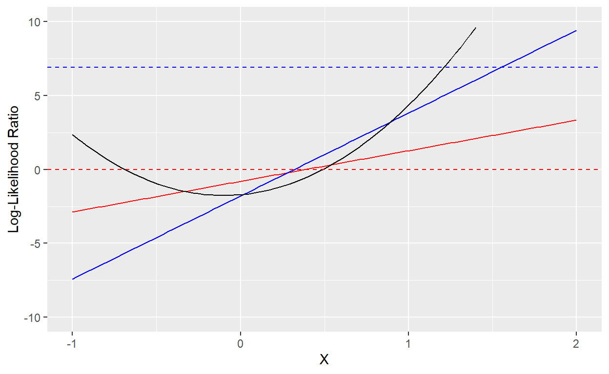
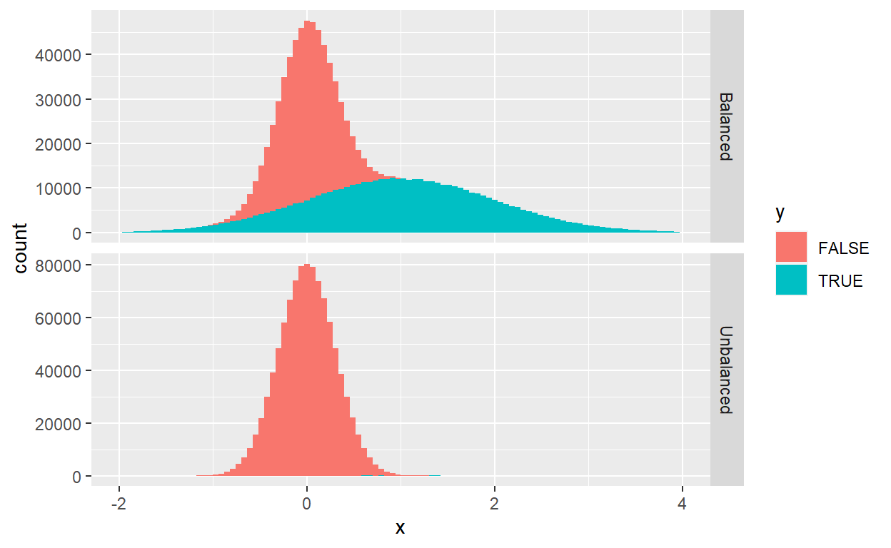

A short description of the post.
During the last few months, I’ve been working on some machine learning applications to Forensic Science, a.k.a. Criminalistics. In this field, one common task for the data analyst is to present the trier-of-fact (the person or people who determine the facts in a legal proceeding) with a numerical assessment of the strength of the evidence provided by available data towards different hypotheses. In more familiar terms, forensic experts are responsible of computing the likelihoods (or likelihood ratios) of data under competing hypotheses, which are then used by the trier-of-fact to produce (Bayesian) posterior probabilities for the hypotheses in question1.
In relation to this, forensic scientists have developed a bunch techniques to assess the performance of a likelihood ratio model in discriminating between two alternative hypothesis. In particular, I have come across the so called Likelihood Ratio Cost, usually defined as:
\[ C_{\text{LLR}} = \frac{1}{2N_1} \sum _{Y_i=1} \log(1+r(X_i) ^{-1})+\frac{1}{2N_0} \sum _{Y_i=0} \log(1+r(X_i)), \tag{1} \] where we assume we have data consisting of \(N_1+N_0\) independent identically distributed observations \((X_i,\,Y_i)\) and \(r(X)\) is our model for \(\frac{\text{Pr}(X\vert Y = 1)}{\text{Pr}(X\vert Y = 0)}\). The main reason for writing this note was to understand some properties of Eq. (1), which I found (and still find, in some respects - see below) somewhat obscure2.
Strictly speaking, there are several aspects to what I have referred to as the “performance of a likelihood ratio model”. First of all, there is the left-over uncertainty on \(Y\) after measuring \(X\), which is an intrinsic property of the data and is independent of modeling. Second, \(X\) may not correspond to raw data, but rather be the result of some data-processing/summary, which will in general reduce the amount of available information on \(Y\). Finally, in the general case, the likelihood ratio \(r(X)\) will not be an exact model, but only an approximation estimated from data. All this aspects get captured and mixed by Eq. (1), luckily in a way that can be actually decomposed (see below).
I begin with a mathematical generalization of Eq. (1).
Let \(\{(X_i,\,Y_i)\}_{i=1,\,2,\,\dots,N}\) be independent draws from a joint distribution, with binary \(Y_i \in \{0,\,1\}\). Given a function \(w=w(\boldsymbol Y)\), symmetric in its arguments, we define the functional:
\[ \mathcal L_N^w[f] = -\frac{1}{N}\sum_{i=1} ^N \left[w(\boldsymbol Y)Y_i \log(f(X_i))+ w({\boldsymbol Y}^c)( Y_i^c) \log(f^c(X_i))\right],\tag{2} \] where \(f=f(X)\) is any function satisfying \(f(X)\in [0,\,1]\) for all \(X\), and we let \(q^c = 1-q\) for any number \(q \in [0,\,1]\).
We now look for the population minimizer of (2), i.e. the function \(f_*\) that minimizes the functional \(f \mapsto \mathbb E(\mathcal L _N ^w [f])\)3. We have:
\[ \mathbb E(\mathcal L _N ^w [f]) = -\frac{1}{N}\sum _{i=1} ^N \mathbb E\left[ \mathbb E(Y_i\cdot w(\boldsymbol Y)\vert X_i)\cdot \log(f(X_i))+E(Y_i^c\cdot w(\boldsymbol Y ^c)\vert X_i)\cdot \log(f^c(X_i))\right], \] which is minimized by:
\[ \begin{split} f_*(X_i) &= \frac{1}{1+r(X_i)^{-1}},\\ r_*(X_i) &= \dfrac{E(Y_i\cdot w(\boldsymbol Y)\vert X_i)}{E(Y_i^c\cdot w(\boldsymbol Y^c)\vert X_i)}, \end{split} \] with:
\[ \mathbb E(\mathcal L _N ^w [f_*]) = \mathbb E\left[ \mathbb E(Y_i\cdot w(\boldsymbol Y) + Y_i^c\cdot w(\boldsymbol Y^c)\vert X_i)\cdot \mathcal H(f_*(X_i))\right]. \] Here \(\mathcal H(p) = -p \log (p) -(1-p) \log(1-p)\), and the index \(i\) in the previous expression can be any index, since data points are assumed to be identically distributed. For any other function \(f\), we have:
\[ \mathbb E(\mathcal L _N ^w [f]) - \mathbb E(\mathcal L _N ^w [f_*]) = \mathbb E\left[ \mathbb E(Y_i\cdot w(\boldsymbol Y) + Y_i^c\cdot w(\boldsymbol Y^c)\vert X_i)\cdot \mathcal D(f_*(X_i)\vert \vert f(X_i))\right], \] being \(\mathcal D(p\vert \vert q) = p \log (\frac{p}{q}) + (1-p) \log (\frac{1-p}{1-q})\).
Finally, if \(X = g(\widetilde X)\) for some random variable \(\widetilde X\), and we define:
\[ \widetilde{\mathcal L} _N^w[\widetilde f] = -\frac{1}{N}\sum_{i=1} ^N \left[w(\boldsymbol Y)Y_i \log(\widetilde f(\widetilde X))+ w({\boldsymbol Y}^c)( Y_i^c) \log(\widetilde f(\widetilde X)^c)\right], \] then \(\mathcal L _N ^w [f] = \widetilde{\mathcal L} _N^w[f \circ g]\). If \(\widetilde f _* =\) is the population minimizer of \(\widetilde{\mathcal L} _N^w\), it follows that \(\mathbb E (\widetilde{\mathcal L} _N^w[\widetilde f _*]) \leq \mathbb E(\mathcal L _N ^w [f_*])\).
In conclusion, we can decompose the expected loss for a function \(f=f(X)\), where \(X= g(\widetilde X)\), in the following suggestive way:
\[ \mathbb E(\mathcal L _N ^w [f]) = (L_N ^w)_\text{min}+(L_N ^w)_\text{proc} +(L_N ^w)_\text{missp} \] where:
\[ \begin{split} (L_N ^w)_\text{min}&\equiv\mathbb E(\widetilde{\mathcal L} _N^w[{\widetilde f} _*]) \\ &= \mathbb E\left[ \mathbb E(Y_i\cdot w(\boldsymbol Y) + Y_i^c\cdot w(\boldsymbol Y^c)\vert \widetilde X _i)\cdot \mathcal H({\widetilde f} _*(\widetilde X _i))\right],\\ (L_N ^w)_\text{proc}&\equiv\mathbb E(\mathcal L _N ^w [f_*]-\widetilde{\mathcal L} _N^w[\phi_*]) \\& = \mathbb E\left[ \mathbb E(Y_i\cdot w(\boldsymbol Y) + Y_i^c\cdot w(\boldsymbol Y^c)\vert X_i)\cdot \mathcal H(f_*(X_i)) \right]- (L_N ^w)_\text{min},\\ (L_N ^w)_\text{missp} & \equiv \mathbb E(\mathcal L _N ^w [f]) - \mathbb E(\mathcal L _N ^w [f_*]) \\&= \mathbb E\left[ \mathbb E(Y_i\cdot w(\boldsymbol Y) + Y_i^c\cdot w(\boldsymbol Y^c)\vert X_i)\cdot \mathcal D(f_*(X_i)\vert \vert f(X_i))\right]. \end{split} \tag{3} \] The three components can be interpreted in the light of the arguments in the introduction: \((L_N ^w)_\text{min}\) represents the minimum expected loss achievable, given the data available \(\widetilde X\); \((L_N ^w)_\text{proc}\) accounts for the information lost in the processing transformation \(X=g(\widetilde X)\); finally \((L_N ^w)_\text{missp}\) is due to misspecification, i.e. the fact that the model \(f(X)\) for the true conditional probability \(f_*(X) = \text{Pr}(Y=1\vert X)\) is an approximation.
For \(w(\boldsymbol) = 1\), \(\mathcal L _N ^{w}\) coincides with the usual cross-entropy loss:
\[ \mathcal L_N^{w=1}[f] = -\frac{1}{N}\sum_{i=1} ^N \left[Y_i \log(f(X_i))+ (1-Y_i) \log(1-f(X_i))\right].\tag{4} \] The population minimizer of (4) is \(f_*(X) = \text{Pr}(Y=1\vert X)\) (independently of sample size) and the corresponding expected loss is:
\[ \mathbb E(\mathcal L _N ^{w=1} [f_*]) = H(Y\vert X), \] the conditional entropy of \(Y\) given \(X\). The expected loss for a generic function \(f\) is:
\[ \mathbb E(\mathcal L _N ^{w=1} [f]) = H(Y\vert X) + D(f_* \vert \vert f) \] where \(D(f_* \vert \vert f)\) is a short for the Kullback-Liebler divergence between the true and postulated probability measures, with the \(Y\vert X\) conditional probability given by \(f_*(X)\) and \(f(X)\), respectively4. Finally, if \(X = g(\widetilde X)\) as before, we can decompose the expected loss of \(f\) as in the previous section:
$$ \[\begin{split} \mathbb E(\mathcal L _N ^{w=1} [f]) &= (L_N ^{w=1})_\text{min}+(L_N ^{w=1})_\text{proc} +(L_N ^{w=1})_\text{missp},\\ (L_N ^{w=1})_\text{min} & = H(Y\vert \widetilde X),\\ (L_N ^{w=1})_\text{proc} & = I(\widetilde X;Y\vert X),\\ (L_N ^{w=1})_\text{missp} & = D(f_*\vert \vert f). \end{split}\]\tag{5} \[ where $I$ denotes mutual information, and we employed identities [@Cover2006]: \] I(X;YX) = I(X,Y)-I(X,Y) = H(YX)-H(YX). $$
All these quantities have straightforward information-theoretic interpretations. In particular, \((L_N ^{w=1})_\text{proc}\) can be interpreted as the amount of information on \(Y\) lost due to processing, whereas \((L_N ^{w=1})_\text{missp}\) is the average extra space needed to encode \(Y\) in a scheme optimized for \(f\), rather than for the true \(f_*\).
The quantity \(C_{\text{LLR}}\) defined in Eq. (1) can be put in the general form (2), if we let \(f(X) = (1+r(X)^{-1})^{-1}\) and5:
\[ w(\boldsymbol Y) = \left(\dfrac{2}{N}\sum _{i = 1}^{N}Y_j \right)^{-1} \] The calculations leading to \(f_*\) and \(r_*\) are a bit more involved but can still be carried out analytically. The result for \(r_*\) is:
\[ r_*(X) = \dfrac{\text{Pr}(Y=1\vert X)}{\text{Pr}(Y=0\vert X)}\cdot \frac{\text {Pr}(Y=0)}{\text {Pr}(Y=1)}\cdot \frac{1-\text {Pr}(Y=1)^N}{1-\text {Pr}(Y=0)^N}. \]
Apart from the last term, which tends to unity as \(N\to \infty\), we see that \(r_*(X)\) is essentially the likelihood ratio of \(X\), which we denote \(\Lambda (X)\). Schematically:
\[ r_*(X) \approx \Lambda (X) \sim \dfrac{\text {Pr}(X\vert Y = 1)}{\text {Pr}(X\vert Y = 0)}. \]
In order to avoid annoying \(\approx\) symbols, I will consider a slight modification of the usual \(C_\text{LLR}\), that is Eq. (1) multiplied by \(\dfrac{N_1N_2}{N^2}\) in the same notation. As this is essentially equivalent to the original definition, I will keep denoting this quantity by \(C_\text{LLR}\), in order to avoid cumbersome notations. This can again be obtained from Eq. (2) with:
\[ w(\boldsymbol Y) = \dfrac{1}{2N}\sum _{i = 1}^{N}(1-Y_j), \]
and, in this case, we can easily compute:
\[ r_*(X) = \Lambda (X),\quad f_*(X)=\dfrac{1}{1+\Lambda(X)^{-1}}, \]
where the equal signs are exact. The decomposition of \(\mathbb E(C_\text{LLR})\) reads:
$$ \[\begin{split} \mathbb E(C_\text{LLR}) &= \mathbb E(C_\text{LLR}^\text{min})+\mathbb E(C_\text{LLR}^\text{proc}) +\mathbb E(C_\text{LLR}^\text{missp}),\\ \mathbb E(C_\text{LLR}^\text{min}) &= \text{Var}(Y) \cdot\mathbb E\left[ \frac{1}{2}\left( \dfrac{\text{Pr}(Y = 1\vert \widetilde X)}{\text{Pr}(Y=1)}+\dfrac{\text{Pr}(Y = 0\vert \widetilde X)}{\text{Pr}(Y=0)}\right)\cdot \mathcal H({\widetilde f} _*(\widetilde X))\right],\\ \mathbb E(C_\text{LLR}^\text{proc}) & = \text{Var}(Y) \cdot\mathbb E\left[ \frac{1}{2}\left( \dfrac{\text{Pr}(Y = 1\vert X)}{\text{Pr}(Y=1)}+\dfrac{\text{Pr}(Y = 0\vert X)}{\text{Pr}(Y=0)}\right)\cdot \mathcal H({f} _*( X))\right]-\mathbb E(C_\text{LLR}^\text{min}),\\ \mathbb E(C_\text{LLR}^\text{missp}) &= \text{Var}(Y) \cdot\mathbb E\left[ \frac{1}{2}\left( \dfrac{\text{Pr}(Y = 1\vert X)}{\text{Pr}(Y=1)}+\dfrac{\text{Pr}(Y = 0\vert X)}{\text{Pr}(Y=0)}\right)\cdot \mathcal D({f} _*( X) \vert \vert f(X))\right],\\ \end{split}\]$$
with \(\text{Var}(Y) = \text{Pr}(Y=1)\text{Pr}(Y=0)\).
We can recast the above expressions into a more interpretable form as follows. First of all, we observe that6:
\[ \frac{1}{2}\left( \dfrac{\text{Pr}(Y = 1\vert X)}{\text{Pr}(Y=1)}+\dfrac{\text{Pr}(Y = 0\vert X)}{\text{Pr}(Y=0)}\right)=\dfrac{\text{Pr}(X\vert Y = 1)\cdot \frac{1}{2}+\text{Pr}(X\vert Y = 0)\cdot\frac{1}{2}}{\text{Pr}(X)}\equiv\dfrac{\text{Pr}'(X)}{\text{Pr}(X)}, \] where the last equality is nothing but a definition of \(\text{Pr}^\prime(X)\). We now notice that \(\text{Pr}^\prime(X)\) is indeed the \(X\) marginal distribution from the joint distribution:
\[ \text{Pr}^\prime(X,Y) = \frac{1}{2} \text{Pr}(X \vert Y), \] which gives rise to the same \(X\vert Y\) conditional distribution, but to \(\text{Pr}^\prime(Y=1) = \frac{1}{2}\). Using this fact, we can rewrite:
\[ \mathbb E\left[ \left( \dfrac{\text{Pr}(Y = 1\vert X)}{\text{Pr}(Y=1)}+\dfrac{\text{Pr}(Y = 0\vert X)}{\text{Pr}(Y=0)}\right)\cdot \mathcal u(X)\right] = \mathbb E^\prime (u(X)), \]
for a generic function \(u(X)\), where the expectation on the right-hand side is taken with respect to the \(\text{Pr}^\prime\) probability measure. Finally, observing that \(f_*(X) = \text{Pr}^\prime(Y=1\vert X)\), in analogy with (5) we obtain:
\[ \begin{split} \mathbb E(C_\text{LLR}^\text{min}) & = H^\prime(Y\vert \widetilde X),\\ \mathbb E(C_\text{LLR}^\text{proc}) & = I^\prime(Y; \widetilde X\vert X),\\ \mathbb E(C_\text{LLR}^\text{missp}) & = D^\prime(f_*\vert \vert f), \end{split} \tag{6} \]
where entropies are also computed with respect to the \(\text{Pr}^\prime\) probability measure.
The table below provides a comparison between cross entropy and \(C_\text{LLR}\), summarizing the results from previous sections.
| Cross-entropy | Likelihood Ratio Cost | |
|---|---|---|
| \(f_*(X)\) | \(\text{Pr}(Y = 1\vert X)\) | \((1+\Lambda(X)^{-1})^{-1}\) |
| \(r_*(X)\)` | Posterior odds ratio | Likelihood ratio |
| Minimum | \(H(Y\vert \widetilde X)\) | \(H^\prime(Y\vert \widetilde X)\) |
| Processing | \(I(Y; \widetilde X\vert X)\) | \(I^\prime(Y; \widetilde X\vert X)\) |
| Misspecification | \(D(f_*\vert\vert f)\) | \(D^\prime(f_*\vert\vert f)\) |
The objective of \(C_\text{LLR}\) is found to be the likelihood ratio, as terminology suggests. The interpretation of model selection according to \(C_\text{LLR}\) minimization turns out to be slightly more involved, compared to cross-entropy, which we first review.
Suppose we are given a set of predictive models \(\{\mathcal M_i\}_{i\in I}\), each of which consists of a processing transformation, \(\widetilde X \mapsto X\), and an estimate of the posterior probability \(\text{Pr}(Y = 1\vert X)\). When the sample size \(N \to \infty\), cross-entropy minimization will almost certainly select the model that minimizes \(I(Y; \widetilde X\vert X) + D(f_*\vert \vert f)\). Following standard Information Theory arguments, we can interpret this model as the optimal (on average) compression algorithm for \(Y\), assuming \(X\) to be available at both the encoding and decoding ends.
The previous argument carries over mutatis mutandi to \(C_\text{LLR}\) minimization, with an important qualification: optimal average compression is now achieved with respect to a different probability measure \(\text{Pr}'(X,Y) = \frac{1}{2}\text {Pr}(X\vert Y)\), that satisfies \(\text{Pr}'(X\vert Y) = \text{Pr}(X\vert Y)\) and \(\text{Pr}'(Y = 1) = \frac{1}{2}\). In particular, according to \(\text{Pr}'\), the likelihood ratio coincides with the posterior odds ratio, and \((1+\Lambda(X)^{-1})^{-1}\) coincides with posterior probability, which clarifies why we can measure differences from the true likelihood ratio through the Kullback-Liebler divergence.
The measure \(\text{Pr}'\) is not just an abstruse mathematical construct: it is the result of balanced sampling from the original distribution, i.e. taking an equal number of positive and negative cases7. If the \((X,\,Y)\) distribution is already balanced, either by design or because of some underlying symmetry in the data generating process, \(C_{\text{LLR}}\) is essentially equivalent to cross-entropy loss, as we have shown. On the other hand, for very unbalanced distributions (with \(\text{Pr}(Y=1)\) very close to one or zero) balanced sampling can be costly in terms of data, leading to rejection of many data points. In this case, if the goal is to estimate the likelihood ratio, employing a \(C_{\text{LLR}}\) loss can be advantageous.
In general, the posterior odd ratio and likelihood ratio differ only by a constant, the prior ratio \(\frac{\text {Pr}(Y=1)}{\text {Pr}(Y=0)}\), so it is reasonable to try to fit the same functional form to both of them. Let us illustrate with a simulated example of this type the differences between cross-entropy and \(C_{\text{LLR}}\) optimization.
Suppose that \(X \in \mathbb R\) and $Y{0,,1} have joint probability density:
\[ \Phi(X,Y)=Y\frac{\pi}{\sqrt{2\pi\sigma _1^2}}\exp(-\frac{(X-\mu_1)^2}{2\sigma _1^2})+(1-Y)\frac{1-\pi}{\sqrt{2\pi\sigma _0^2}}\exp(-\frac{(X-\mu_0)^2}{2\sigma _0^2}), \]
so that \(X\) has marginal density:
\[ \phi(X\vert Y) = \frac{1}{\sqrt{2\pi\sigma _Y^2}}\exp(-\frac{(X-\mu_Y)^2}{2\sigma _Y^2}), \] and \(Y\) has marginal probability:
\[ \pi = \text{Pr}(Y = 1) \] The true likelihood ratio and posterior odds ratio are respectively given by:
\[ \begin{split} \Lambda (X) & \equiv \frac{\phi(X\vert Y=1)}{\phi(X\vert Y=0)} = e^{a X^2 + bX +c},\\ \rho (X) & \equiv \frac{\text{Pr}(Y = 1\vert X)}{\text{Pr}(Y = 0\vert X)} = e^{aX^2 + bX+c+d}, \end{split} \] where we have defined:
$$
a , b _1 - _0, c -+(), d () .
$$
Suppose that we fit an exponential function \(r(X)=e^{mX +q}\) to \(\Lambda(X)\) by Likelihood Ratio cost minimization, and similarly \(r'(X)=e^{m'X+q'}\) to \(\rho(X)\) by cross-entropy minimization8. Do the results of these two procedure agree in some sense in the large sample limit?
We can easily find this out through a simulation. We first define two helpers to compute cross-entropy and \(C_\text{LLR}\), respectively:
Second, we define a function to sample from the distribution described above:
where I have encoded the parameter values I will use for the example as argument defaults. In particular, I’m considering a heavily unbalanced case (\(\text{Pr}(Y = 1) = 0.1\%\)) in which negative cases give rise to a sharply localized \(X\) signal around \(X=0\), while the few positive cases give rise to a broader signal centered at \(X=1\).
We now generate a large dataset and use it to optimize the two loss functions, which should provide a fairly close approximation to the population minimizers:
where the purpose of the last function is to return the estimated log-likelihood ratio at a given \(X=x\). Since the objective of cross-entropy is actually the posterior odds ratio, we need to divide the cross-entropy estimate by the prior ratio \(\frac{\pi} {1-\pi}\) in order to obtain the likelihood ratio, which we can achieve with the following trick:
Finally, we also define a function that computes the true log-likelihood ratio:
So, what do our best estimates look like? The plot below shows the best fit lines for the log-likelihood ratio from \(C_{\text{LLR}}\) minimization (in solid red) and cross-entropy minimization (in solid blue). The true log-likelihood ratio parabola is the black line. Also shown are the \(\text{LLR}=0\) line (in dashed red) and the \(\text{LLR}=\ln(\frac{1-\pi}{\pi})\) (in dashed blue), which are the appropriate “Bayes” thresholds for classifying a data point as positive (\(Y=1\)), assuming data comes from a balanced and unbalanced distribution, respectively.
library(dplyr)
library(ggplot2)
ggplot() +
geom_function(fun = \(x) llr(x, par_cllr), color = "red") +
geom_function(fun = \(x) llr(x, par_cross_entropy), color = "blue") +
geom_function(fun = \(x) llr_true(x), color = "black") +
geom_hline(aes(yintercept = 0), linetype = "dashed", color = "red") +
geom_hline(aes(yintercept = -log(pi / (1-pi))),
linetype = "dashed", color = "blue") +
ylim(c(-10,10)) + xlim(c(-1, 2)) +
xlab("X") + ylab("Log-Likelihood Ratio")
The reason why the lines differ is that they are designed to solve a different predictive problem: as we’ve argued above, minimizing \(C_\text{LLR}\) looks for the best \(Y\vert X\) conditional probability estimate according to the balanced measure \(\text{Pr}'\), whereas cross-entropy minimization does the same for the original measure \(\text{Pr}\). This is how data looks like under the two measures (the histograms are stacked - in the unbalanced case, positive examples are invisible on the linear scale of the plot):
test_data <- bind_rows(
rxy(n = 1e6, pi = 0.5) |> mutate(type = "Balanced", llr_thresh = 0),
rxy(n = 1e6) |> mutate(type = "Unbalanced", llr_thresh = -log(pi / (1-pi)))
)
test_data |>
ggplot(aes(x = x, fill = y)) +
geom_histogram(bins = 100) +
facet_grid(type ~ ., scales = "free_y") +
xlim(c(-2, 4))
This differences are reflected in the classification accuracies of the resulting classifiers defined by \(\hat Y(X)=I(\text{LLR}(X)>\text{threshold})\), where the appropriate threshold is zero in the balanced case, and \(\ln(\frac{1-\pi}{\pi})\) in the unbalanced case. According to intuition, we see that the \(C_\text{LLR}\) optimizer beats the cross-entropy optimizer on the balanced sample, and performs slightly worse on the unbalanced one (the differences are not statistical fluctuations).
# A tibble: 2 × 4
type accuracy_cllr accuracy_cross_entropy accuracy_true_llr
<chr> <dbl> <dbl> <dbl>
1 Balanced 0.816 0.804 0.839
2 Unbalanced 0.999 0.999 0.999This is how I understood things should theoretically work, from discussions with friends who are actually working on this field. I have no idea on how much day-to-day practice comes close to this mathematical ideal, and whether there exist other frameworks to the one I have just described.↩︎
The Likelihood Ratio Cost was introduced in (Brümmer and du Preez 2006). The reference looks promising, but I find its notation and terminology so unfamiliar that I decided to do my own investigation and read it in a second moment.↩︎
Nota bene: the function \(f\) is here assumed to be fixed, whereas the randomness in the quantity \(L _N ^w [f]\) only comes from the paired observations \(\{(X_i,\,Y_i)\}_{i=1,\,2,\,\dots,N}\).↩︎
Due to the chain-rule satisfied by the Kullback-Liebler divergence (Cover and Thomas 2006), this is the same as the (\(X\)-averaged) Kullback-Liebler divergence \(\mathbb E(D(f_*(X)\vert\vert f(X))\)↩︎
The quantity \(w(\boldsymbol Y)\) is not defined when all \(Y_i\)’s are zero, as the right-hand side of Eq. (1) itself. In this case, we make the convention \(w(\boldsymbol Y) = 0\).↩︎
Here we assume, just for notational simplicity, that \(X\) is discrete.↩︎
Formally, given an i.i.d. stochastic process \(Z_i = (X_i,\,Y_i)\), we can define a new stochastic process \(Z_i ^\prime = (X_i^\prime,\,Y_i^\prime)\) such that \(Z_i ^\prime = Z_{2i - 1}\) if \(Y_{2i-1}\neq Y_{2i}\), and \(Z_i ^\prime = \perp\) (not defined) otherwise. Discarding \(\perp\) values, we obtain an i.i.d. stochastic process whose individual observations are distributed according to \(\text{Pr}^\prime\).↩︎
This is just logistic regression. A straight line may be a reasonable approximation if \(\sigma_0 ^2\approx \sigma_1 ^2\), which however I will assume below to be badly violated↩︎